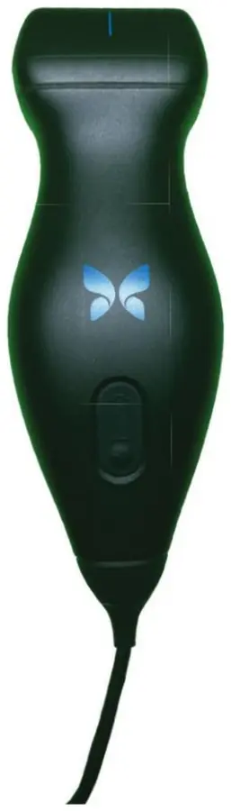
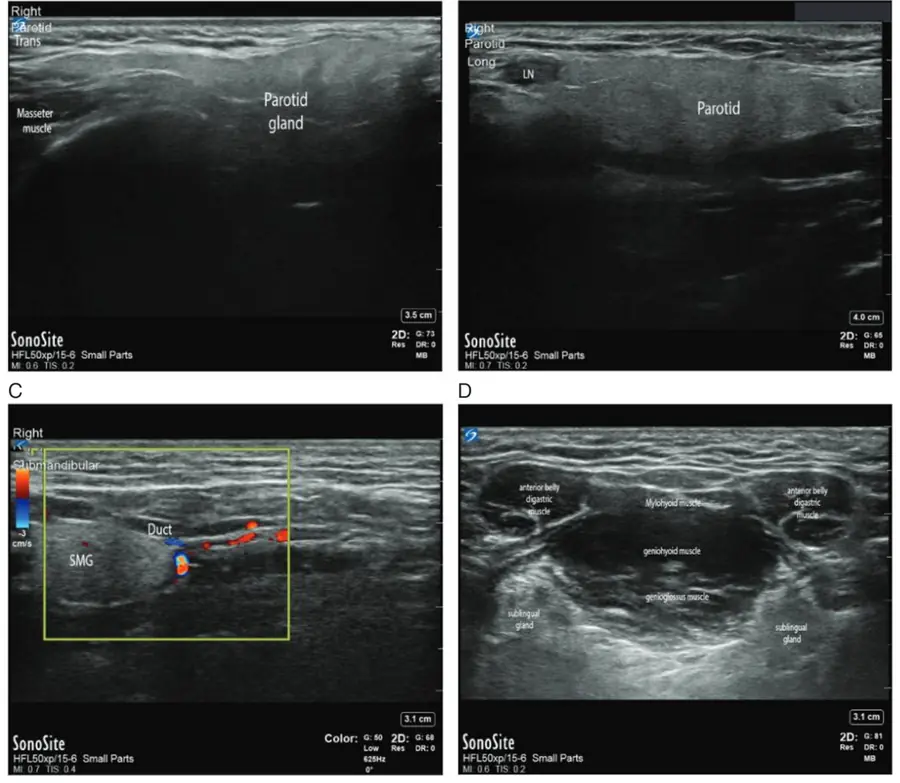

نسخه استخراجشده؛ ترجمه یا تأیید علمی انجام نشده است. وضعیت: captured
سونوگرافی از «امواج صوتی پرفرکانس برای ساخت تصاویر بافت زیستی در زمان واقعی و بدون پرتو یونساز» استفاده میکند. و هم تصویربرداری مورفولوژیک میدهد و هم عملکردی — با بررسی جریان خون در عروق.

و مزیتهای عملیاش: «تجهیزات سیار و نسبتاً ارزانتر از CT و MRI». و امروز «سونوگرافی قابل حمل نقطهی مراقبت در مطبهای اولیه و تخصصی رایجتر شده، هم برای تشخیص و هم برای هدایت روشهای مداخلهای».
و اعداد فرکانس — سه لایه که باید از هم جدا شوند:
و سازوکار: رویکرد پالس-اکو. سختافزار مرکزی ترانسدیوسر است که «روی سطح پوست بالای ناحیهی مورد بررسی گذاشته میشود، یک پالس موضعی اولتراسوند تولید و به بیمار میفرستد، و اکوهای بازگشتی از بافتها را هم ثبت میکند».
و نقش ژل: «یک ژل پلیمری بر پایهی آب انتقال صدا از پروب به بافتها را تسهیل و شکاف هوایی میان پروب و سطح پوست را حذف میکند.»
و قلب ترانسدیوسر:بلور پیزوالکتریک — با یک ویژگی دوطرفه. «وقتی میدان الکتریکی اعمال شود، ماده تغییر شکل میدهد و تنشهای حاصل موج صوتی تولید میکنند. برعکس، وقتی تنش مکانیکی اعمال شود، میدان الکتریکی درون بلور تولید میشود.» و همین دو ویژگی «برای تولید و اندازهگیری صدا» به کار میروند.
و سه نوع ترانسدیوسر — با فرکانس و کاربرد متفاوت:
و فناوری تازه:CMUT (ترانسدیوسرهای خازنی ریزماشینکاریشده). واحد پایهاش «یک خازن صفحهموازی است که یک صفحهاش ثابت و دیگری غشای انعطافپذیر است». اعمال ولتاژ متناوب غشا را میلرزاند و اولتراسوند تولید میکند؛
و اکوهای بازگشتی غشا را میلرزانند و «تغییر ظرفیت خازنی» بهعنوان سیگنال قابل اندازهگیری میسازند. دامنهاش: ۵۰۰ کیلوهرتز تا ۵۰ مگاهرتز. و مزیت درخشانش: «یک آرایهی دوبعدی CMUT میتواند برنامهریزی شود تا موج خطی، منحنیخط، یا فازی بدهد. پس یک ترانسدیوسر تصویربرداری کل بدن را فراهم میکند.»
چهار حالت تصویربرداری — هرکدام یک پرسش متفاوت را پاسخ میدهند:

و تصویربرداری زمان واقعی چیست؟ «تکنیکهای امروزی اجازه میدهند اکوها با نرخ کافی سریع پردازش شوند تا درک حرکت ممکن گردد.»
و حالا مفهوم مرکزی: امپدانس آکوستیک. «کسری از پرتو که به ترانسدیوسر بازتاب میشود به امپدانس آکوستیک بافت بستگی دارد»:
Z = ρ (چگالی بافت) × c (سرعت صوت در بافت)
و بازتاب آینهای: «وقتی موج از یک سطح مشترک صاف و گسترده میان بافتهای با امپدانس آکوستیک متفاوت میگذرد، پالس تا حدی بازتاب میشود و بقیهی امواج عمیقتر نفوذ میکنند.»
و شدت پالس بازتابی — وقتی پرتو عمود بر سطح مشترک باشد:
IR = (Z₂ − Z₁)² ÷ (Z₂ + Z₁)²
و سه پیامد این فرمول را بخوان:
و سه سازوکار تضعیف پرتو: بازتاب، شکست (وقتی پرتو از سطح مشترک دو بافت با سرعت انتقال صوت متفاوت بگذرد)، و پراکندگی (وقتی موج با ساختارهای کوچکتر از طول موجش برهمکنش کند، و «شدت اکوی بازگشتی پایین است»). و سرنوشت انرژی از دست رفته: «به بافت بهصورت گرما منتقل میشود.»
و سه واژهی توان و شدت که در هم میآمیزند: «هرچه دامنهی اکوی بازگشتی بیشتر، سیگنال تصویر روشنتر.»، «توان نرخ انتقال انرژی صوتی از ترانسدیوسر است و بر عمق نفوذ اثر میگذارد.»، «شدت، توان بر واحد سطح است. شدت بالا میتواند به گرم شدن بافت و آسیب زیستی بالقوه بینجامد.»
و سه واژهی توصیف سیگنال بافت — که کل زبان گزارش سونوگرافیاند:
و کاربرد در سر و گردن:
و ایمنی: سونوگرافی پرتو یونساز ندارد و خطر سرطان نمیسازد؛ افزایش دمای بافت کمتر از ۱ درجه است، و کاویتاسیون با تنظیم فرکانس، شدت و زمان مهار میشود.